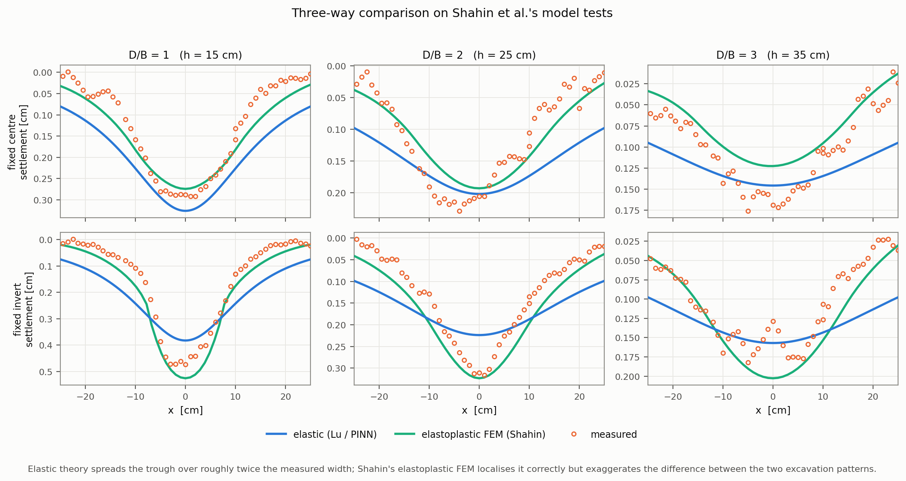
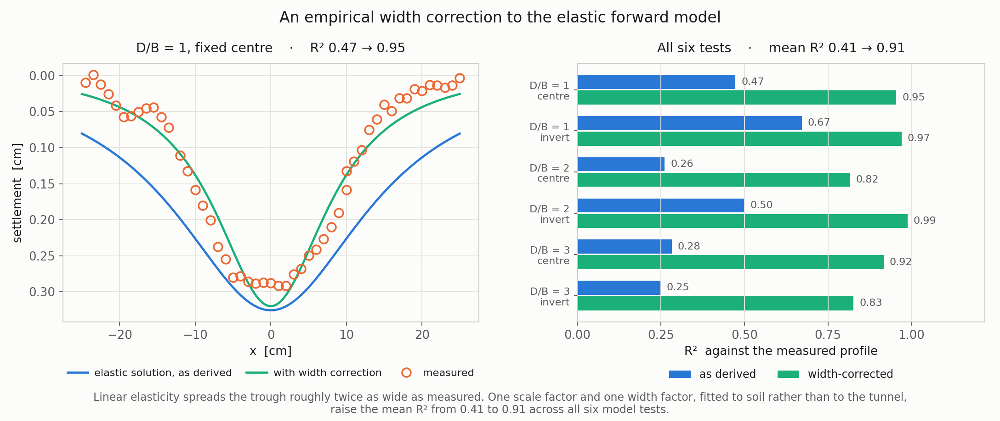
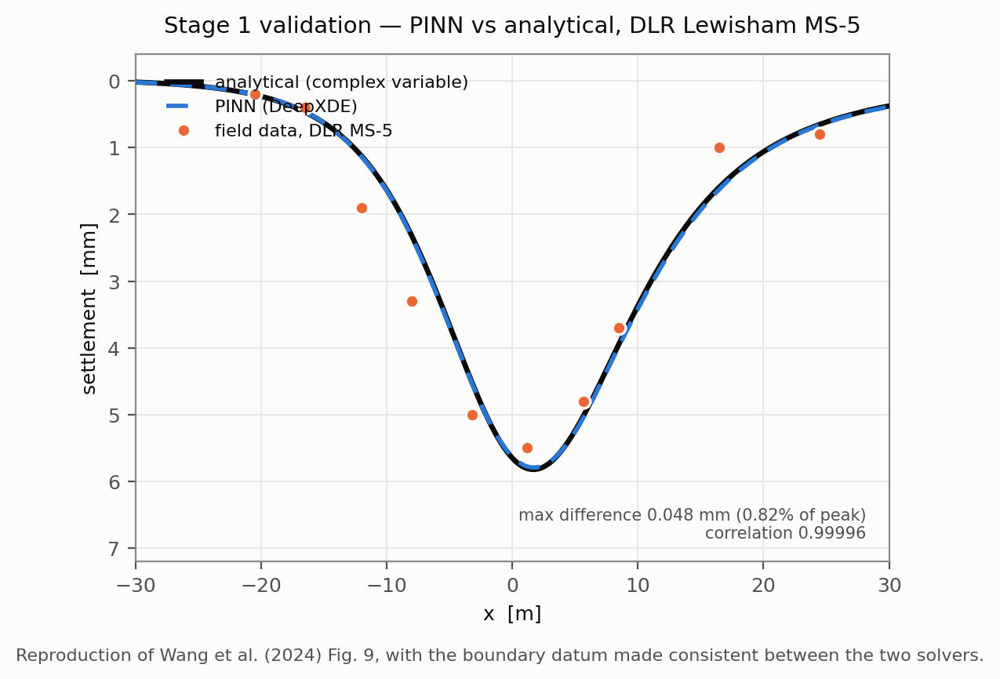

Research & Thesis
Undergraduate thesis
Forward prediction of tunnelling-induced settlement: a unified displacement function and a physics-informed neural network validated against controlled model tests
The short version. Settlement above a tunnel is normally predicted by fitting a curve to measurements after the tunnel is built. I tested whether it can be predicted beforehand, from how the tunnel wall moves. It can — the depth of the trough comes out within 12%, with nothing fitted — but elasticity spreads the trough about twice too wide. A two-parameter width correction fixes that, raising the mean R² from 0.41 to 0.91 across six model tests.
The question
Standard practice reduces a settlement trough to a single ground loss ratio. That assumes the ground responds only to how much soil is lost, never to how the tunnel cross-section deforms. Shallow model tests say otherwise: two excavation patterns at an identical 15.36% ground loss produced peak settlements differing by a factor of 1.63. Later methods handled the shape with a unified displacement function, but recovered its coefficients by back-fitting a measured trough — so the forward prediction had never actually been tested.
What I did
I applied the unified displacement function to an experiment where the wall movement is imposed by the apparatus rather than fitted. Shahin et al. contracted a 10 cm model tunnel with a tapered shim; the two patterns they used map exactly onto two modes of the function. Every prediction below is therefore genuinely out-of-sample.
- Solved the elastic half-plane by the complex variable method — conformal mapping onto an annulus, Laurent-series potentials, least-squares collocation on the tunnel wall. Boundary residual 10−14; a published field case reproduced to within 0.02 mm.
- Rebuilt the same problem as a physics-informed neural network in DeepXDE, as mixed first-order elasticity. Two measures the source paper does not report turned out to be necessary for convergence: non-dimensionalising the lengths, and grading the collocation points logarithmically towards the tunnel wall.
- Compared both against measurement at cover ratios D/B = 1, 2 and 3.
What I found
- Peak settlement predicted to within 12% for the fixed-centre pattern, with no fitted parameters.
- The trough comes out 1.6 to 2.1 times too wide. Linear elasticity cannot localise deformation into a shear band. The fitted width parameter i/h was 0.37–0.57 for the measurements — the usual range for sand — against 0.72–0.92 for the elastic solution.
- A two-parameter width correction raises the mean R² from 0.41 to 0.91 over all six tests: one scale factor and one width factor, calibrated to soil rather than to the tunnel.
- The PINN matches the analytical solution to 0.77% of peak settlement. That validates the solver. It is not evidence that the wall coefficients can be recovered from surface measurements, which is a separate and harder inverse problem.


| D/B | Pattern | Measured (cm) | UDF (cm) | FEM (cm) | R² UDF | R² FEM |
|---|---|---|---|---|---|---|
| 1 | Fixed centre | 0.292 | 0.326 | 0.274 | 0.47 | 0.89 |
| 1 | Fixed invert | 0.474 | 0.383 | 0.526 | 0.67 | 0.92 |
| 2 | Fixed centre | 0.229 | 0.202 | 0.193 | 0.26 | 0.82 |
| 2 | Fixed invert | 0.316 | 0.224 | 0.323 | 0.50 | 0.82 |
| 3 | Fixed centre | 0.176 | 0.146 | 0.123 | 0.28 | 0.62 |
| 3 | Fixed invert | 0.182 | 0.157 | 0.203 | 0.25 | 0.66 |

Why it matters
Ground loss alone is not enough to predict settlement above a shallow tunnel. An elastic forward model gives you the magnitude but not the width, so it is usable for a first estimate at moderate cover and needs a soil-calibrated width correction before it can be trusted near the surface, where buildings actually sit.
Status: Thesis completed 2026. An extended abstract from this work has been submitted to the International Conference on Civil Engineering (ICCE 2026), Dhaka, 17–19 December 2026, and is under review. The analysis regenerates end to end from the source workbooks — happy to share the code or the full thesis on request.
Methods and tools
- Numerical modelling — PLAXIS 3D and PLAXIS 2D (foundations, tunnelling), finite element analysis to failure
- Analytical mechanics — complex variable methods in elasticity, conformal mapping, Laurent series with least-squares collocation
- Scientific computing — Python (NumPy, SciPy, Matplotlib, openpyxl), DeepXDE and PyTorch for physics-informed neural networks
- Geotechnical — settlement trough analysis, ground loss and volume loss methods, pile and raft bearing capacity
- Other — AutoCAD, ETABS, ArcGIS